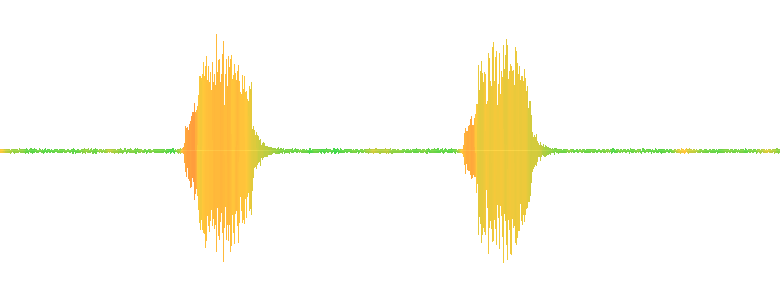

Audio Processing
Spatial Audio Differentiation
Exploring how machine learning can separate directional audio cues from a noisy environment.

Project overview
Real-world recordings often contain several sounds at once. A useful audio system needs to distinguish a sound of interest from surrounding noise while retaining the cues that help identify its direction. This project explores that problem at the intersection of audio processing and machine learning.
Approach
The work investigates a convolutional neural network for separating directional audio cues. Signal processing and audio feature extraction provide ways to represent sound for analysis, while the learning component addresses patterns that are difficult to isolate with simple rules alone.
Why it matters
Distinguishing sounds in a noisy setting is a building block for systems that need to understand their acoustic surroundings. The project connects an interest in audio localization with the broader challenge of extracting useful information from overlapping signals.